Our Story
Over the previous 15 years, Anjali Elastomer—founded in 2009—has developed from a rail component maker into a trusted supplier of complete railway infrastructure.
Premium elastomeric materials, railway fastening systems and infrastructure components—built for safety, stability and long service life.
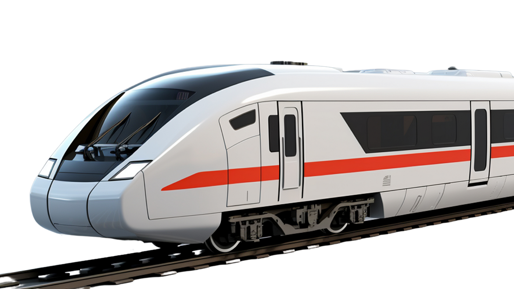
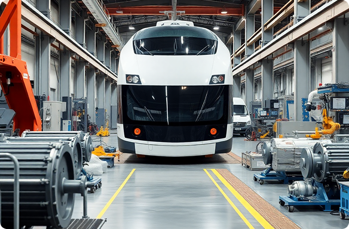
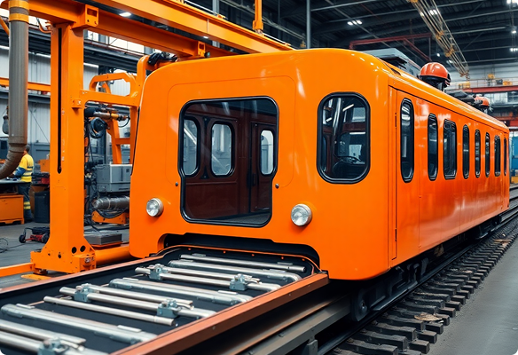
Engineering dependable rail components, manufacturing systems and infrastructure solutions through one integrated vision.
Over the previous 15 years, Anjali Elastomer—founded in 2009—has developed from a rail component maker into a trusted supplier of complete railway infrastructure.
Bridge building, track construction, rail flash-butt welding, turnout systems and fastening solutions are united under one engineering ecosystem.
Four advanced plants in Eastern India combine modern technology, repeatable quality and Good Manufacturing Practices.
Our experience supports landmark rail links, metro networks, bridges and demanding track environments across India.
We believe innovation can transform how people and industries connect and prosper. Since our beginning, Anjali Elastomer has helped shape transportation infrastructure through manufacturing excellence, project capability and lasting stakeholder value.
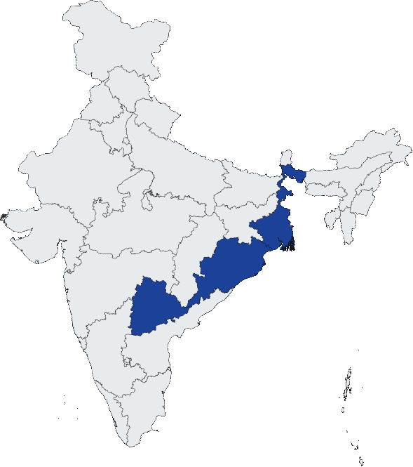
Railway-grade products designed for consistent load transfer, vibration control, alignment and dependable fastening performance.
Engineering insight from the components and materials that keep modern railway systems safe and resilient.
Supporting railway, metro and infrastructure organisations across national and international networks.
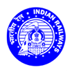
Indian Railways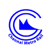
Chennai Metro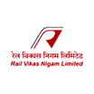
RVNL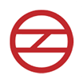
Delhi Metro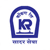
Konkan Railway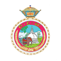
Sri Lankan Railway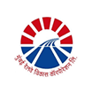
Mumbai Metro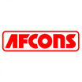
Afcons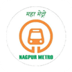
Nagpur Metro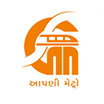
Gujarat MetroTechnical guidance, procurement insight and engineering perspectives for safer, more efficient railways.
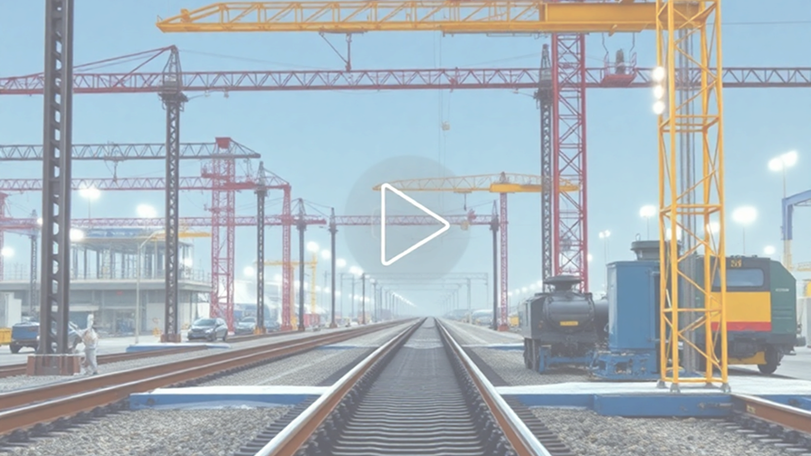
Discover how precision manufacturing and railway engineering shape stronger connections.
Share your performance requirement, product specification or supply programme with our team.
sales@anjalielastomer.com ↗